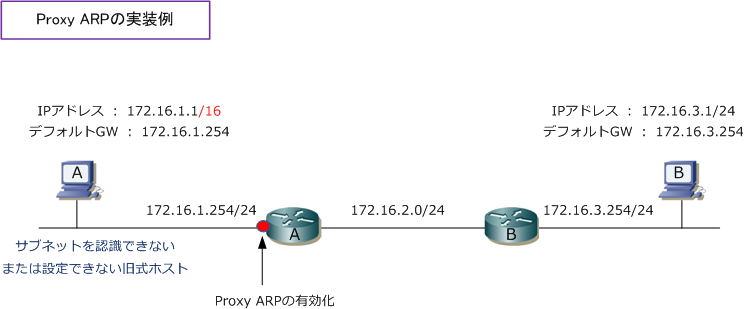
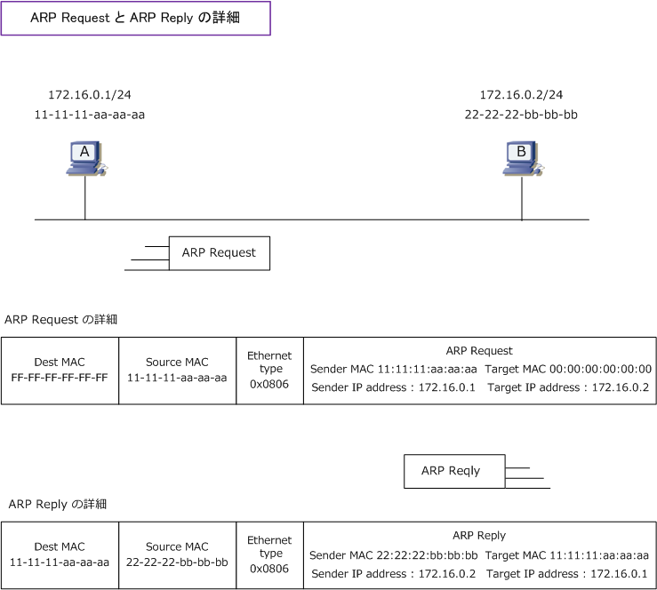

Proxy ARP
Proxy ARP（プロキシARP）とは
Proxy ARPとは、他のデバイス宛てのARP要求に対して、本来の問い合わせ先に代わってARP応答する機能。 Proxy ARPはルータなどのL3デバイスで実装します。Proxy ARPはサブネット化されたネットワーク環境で サブネットマスクを認識しない旧式のホストが通信する時に、一般的に使用されていた機能ではありますが、 現在では、サブネットを設定できない旧式ホストは存在せず、またサブネットを適正に実装することからも この観点でのProxy ARPの実装例は少なく、単に、ARPの代理応答という観点で実装するケースがあります。
Proxy ARP（プロキシARP）の説明 - サブネットを認識できない旧式ホストが存在するケース
下図で、ホストAからBにパケットを送信する時、ホストAはネットワークアドレスを比較してホストBが同じ セグメントにいると判断して、デフォルトゲートウェイのアドレスへARP要求を行うのではなく、ホストBの IPアドレスにARP要求を行います。プロキシARPが有効な I/F を持つルータがこのARP要求を受信した場合、 ホストBの代わりにプロキシARP応答パケットを送信します。その結果、下図においても、ホストAとBは同じ セグメントにいるような通信を行えます。Cisco機器では、プロキシARPはデフォルトで有効になっています。

Proxy ARPの有効化（ デフォルトで有効 ）
Cisco(config)# interface gigabitEthernet 0/1 Cisco(config-if)# ip proxy-arp
参考情報：ARP Request と ARP Reply パケットの中身
